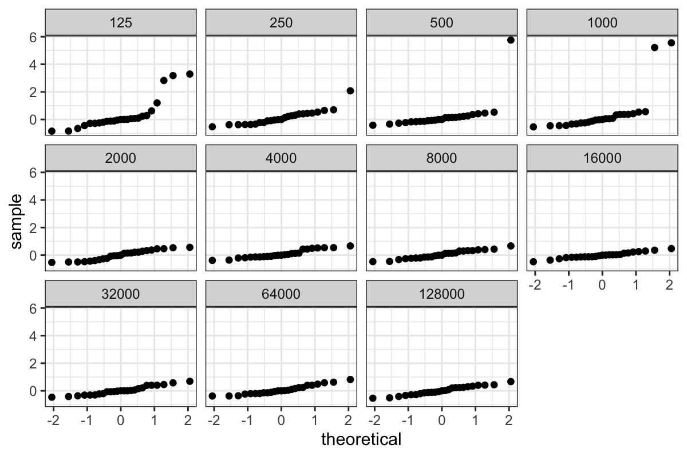

Stat 470/670 Lecture 5: Building Simple Models
Julia Fukuyama
Today
- Build and critique simple models
- We’ve presented a lot of visualization methods for univariate data
simply as visualization methods, but they can also be thought of as
model validation techniques. e.g. a QQ plot is for checking normality of
a distribution.
- From other statistics classes, you know how to infer parameter
values and test hypotheses. Those parameter estimates and the
corresponding tests are valid given certain assumptions about the data.
Today we’re going to talk about how to check whether those assumptions
hold, how to try to make the data to fit those assumptions if they don’t
hold, and what to do if even the transformations don’t work.
Linear models
From your earlier statistics courses, you remember linear models.
Recall the assumptions for a linear model:
- Same variance of errors within each group (homoscedasticity)
Singer example
Reading: Cleveland pp. 34-41.
Load our standard libraries:
library(lattice)
library(ggplot2)
library(tidyverse)
## ── Attaching packages ───────────────────────────────────────────────────────────────────── tidyverse 1.3.2 ──
## ✔ tibble 3.1.8 ✔ dplyr 1.0.10
## ✔ tidyr 1.2.1 ✔ stringr 1.5.0
## ✔ readr 2.1.3 ✔ forcats 0.5.2
## ✔ purrr 0.3.5
## ── Conflicts ──────────────────────────────────────────────────────────────────────── tidyverse_conflicts() ──
## ✖ dplyr::filter() masks stats::filter()
## ✖ dplyr::lag() masks stats::lag()
Singer height = Average height for their voice part + some error
If you’ve taken S431/631 or a similar regression course, you might
recognize this as a special case of a linear model. If you haven’t,
well, it doesn’t really matter much except we can use the
lm() function to fit the model. The advantage of this is
that lm() easily splits the data into fitted
values and residuals:
Observed value = Fitted value + residual
Let’s get the fitted values and residuals for each voice part:
singer_lm = lm(height ~ 0 + voice.part, data=singer)
We can extract the fitted values using
fitted.values(singer.lm) and the residuals with
residuals(singer.lm) or singer.lm$residuals.
For convenience, we create a data frame with two columns: the voice
parts and the residuals.
singer_res = data.frame(voice_part = singer$voice.part, residual = residuals(singer_lm))
We can also do this with group_by and
mutate:
fits = singer %>%
group_by(voice.part) %>%
mutate(fit = mean(height),
residual = height - mean(height))
Does the linear model fit?
To asssess whether the linear model is a good fit to the data, we
need to know whether the errors look like they come from normal
distributions with the same variance.
The residuals are our estimates of the errors, and so we need to
check both normality and homoscedasticity.
Homoscedasticity
There are a few ways we can look at the residuals. Side-by-side
boxplots give a broad overview:
ggplot(singer_res, aes(x = voice_part, y = residual)) + geom_boxplot()

We can also look at the ecdfs of the residuals for each voice
part.
ggplot(singer_res, aes(x = residual, color = voice_part)) + stat_ecdf()

From these plots, it seems like the residuals in each group have
approximately the same variance.
Normality
We also want to examine normality of the residuals, broken up by
voice part. We can do this by faceting:
ggplot(singer_res, aes(sample = residual)) +
stat_qq() + facet_wrap(~ voice_part, ncol=4)
Not only do the lines look reasonably straight, the scales look
similar for all eight voice parts. This suggests a model where all of
the errors are normal with the same standard deviation. This is
convenient because it is the form of a standard linear model:
Singer height = Average height for their voice part + Normal(\(0, \sigma^2\)) error.
Normality of pooled residuals
If the linear model holds, then all the residuals come from the same
normal distribution.
We’ve already checked for normality of the residuals within each
voice part, but to get a little more power to see divergence from
normality, we can pool the residuals and make a normal QQ plot of all
the residuals together.
ggplot(singer_res, aes(sample = residual)) +
stat_qq()

It’s easier to check normality if we plot the line that the points
should fall on: if we think the points come from a \(N(\mu, \sigma^2)\) distribution, they
should lie on a line with intercept \(\mu\) and slope \(\sigma\) (the standard deviation).
In the linear model, we assume that the mean of the error terms is
zero. We don’t know what their variance should be, but we can estimate
it using the variance of the residuals.
Therefore, we add a line with the mean of the residuals (which should
be zero) as the intercept, and the SD of the residuals as the slope.
This is:
ggplot(singer_res, aes(sample = residual)) +
stat_qq() +
geom_abline(intercept = 0, slope = sd(singer_res$residual))

The actually correct way
Pedantic note: We should use an \(n-8\) denominator instead of \(n-1\) in the SD calculation for degrees of
freedom reasons. We can get this directly from the linear model:
## [1] 2.465049
round(summary(singer_lm)$sigma, 3)
## [1] 2.503
However, the difference between this and the SD above is
negligible.
Add the line:
ggplot(singer_res, aes(sample = residual)) +
stat_qq() + geom_abline(intercept = mean(singer_res$residual), slope=summary(singer_lm)$sigma)
The straight line isn’t absolutely perfect, but it’s doing a pretty
good job.
Our final model
Since the errors seem to be pretty normal, our final model is:
Singer height = Average height for their voice part + Normal(\(0, 2.5^2\)) error.
Note: While normality (or lack thereof) can be important for
probabilistic prediction or (sometimes) for inferential data analysis,
it’s relatively unimportant for EDA. If your residuals are about normal
that’s nice, but as long as they’re not horribly skewed they’re probably
not a problem.
What have we learned?
About singers:
- We’ve seen that average height increases as the voice part range
decreases.
- Within each voice part, the residuals look like they come from a
normal distribution with the same variance for each voice part. This
suggests that there’s nothing further we need to do to explain singer
heights: we have an average for each voice part, and there is no
suggestion of systematic differences beyond that due to voice part.
About data analysis:
- We can use some of our univariate visualization tools, particularly
boxplots and ecdfs, to look for evidence of heteroscedasticity.
- We can use normal QQ plots on both pooled and un-pooled residuals to
look for evidence of non-normality.
- If we wanted to do formal tests or parameter estimation for singer
heights, we would feel pretty secure using results based on normal
theory.
Example 2: Bin Packing
Reading: Cleveland pp. 68-79.
A classic
problem in computer science involves how to most efficiently pack
objects of different volumes into containers so as to minimize the
number of containers used.
The bin packing problem is NP hard, but some heuristic algorithms
perform well.
One such algorithm is the first fit descending algorithm, where the
objects are considered in decreasing order of size, and each object is
put into the first container in which it fits.
Our dataset
Some investigators were interested in the performance of this
algorithm, and in particular how much excess volume is available when
this algorithm is run on different numbers of objects. To this end, they
ran a simulation experiment in which simulated \(n\) objects with volumes drawn from a
uniform distribution on \([0, .8]\),
ran the first fit descending algorithm to pack those objects into
containers of volume 1, and computed how much empty volume remained in
the containers after the algorithm had completed. They repeated the
simulation 25 times for \(n = 125, 250, 500,
1000, \ldots, 128000\).
The results of the experiment are in lattice.RData, in a
data frame bin.packing.
The data frame contains two variables:
empty.space: The amount of empty space.
number.runs: The number of randomly generated objects
(this is poorly named).
We are interested in how empty space depends on the number of
randomly generated objects (number.runs).
Bin packing
Let’s start off by loading and looking at the data.
load("lattice.RData")
head(bin.packing)
## empty.space number.runs
## 1 1.577127 125
## 2 1.242906 125
## 3 1.389246 125
## 4 0.636317 125
## 5 0.443350 125
## 6 1.522842 125
table(bin.packing$number.runs)
##
## 125 250 500 1000 2000 4000 8000 16000 32000 64000 128000
## 25 25 25 25 25 25 25 25 25 25 25
summary(bin.packing$empty.space)
## Min. 1st Qu. Median Mean 3rd Qu. Max.
## 0.4019 1.2206 1.7590 1.9959 2.4994 6.7839
We can look at the distributions of empty space for every value of
number.runs:
ggplot(bin.packing, aes(x = empty.space)) + geom_histogram(bins = 20) +
facet_wrap(~ factor(number.runs))
From the histograms we notice a couple of outliers for small values
of number.runs
ecdfs:
ggplot(bin.packing, aes(x = empty.space, color = factor(number.runs))) + stat_ecdf()
From the ecdfs, it seems that the bulk of the distributions are
pretty similar, but off set from each other by an additive shift.
We can tell this because the curves are mostly just shifted along the
\(x\)-axis from one another, and the
overall shape is the same for each value of number.runs
Finally, let’s draw boxplots, split by number.runs:
ggplot(bin.packing, aes(factor(number.runs), empty.space)) + geom_boxplot()

The boxplots also show us that aside from some outliers for the small
values of number.runs, the distributions at least have
similar variances.
ggplot(bin.packing, aes(x = log2(empty.space))) + geom_histogram(bins = 20) +
facet_wrap(~ factor(number.runs))

Now we have outliers on both sides for 125 runs, and we have retained
the outliers for 250, 500, and 1000 runs.
ecdfs:
ggplot(bin.packing, aes(x = log2(empty.space), color = factor(number.runs))) + stat_ecdf()

It’s harder to get anything out of the ecdf plots on the transformed
data: we see that the variances are not the same (the slopes increase
with increasing number.runs) and that there is a location
shift, but the picture is less simple than for the raw data.
Boxplots:
ggplot(bin.packing, aes(factor(number.runs), log2(empty.space))) + geom_boxplot()

The boxplots tell essentially the same story as the histograms and
the ecdfs: the variance of the transformed data decreases with
number.runs, and we still have some outliers.
It seems that the transformation isn’t helping us at all: it’s
complicated the story about empty space and number.runs by introducing
heteroscedasticity, it hasn’t gotten rid of skewness or outliers, and it
has made the distributions more difficult to compare.
The moral here is that you should try things out that might not work,
and if you check and they don’t seem like they’re helping you should
feel free to abandon them.
We’ll do the remaining analysis on the raw values.
The next question is about the shape of the distributions: we know
there are outliers, but do the observations in the bulk of the data look
approximately normal?
We use normal QQ plots to investigate:
ggplot(bin.packing, aes(sample = empty.space)) +
stat_qq() + facet_wrap(~ number.runs)

The plot above shows very clearly the non-normality in log(empty
space) for smaller numbers of runs, but since the standard deviation
(slope in the QQ plot) is much smaller for the large number of runs it’s
hard to assess how straight the lines are.
We can fix this by using the argument scales = "free_y"
in the faceting function: this gives every facet its own scale on the
y-axis, spreading out the points so that we can look for linearity or
lack thereof.
ggplot(bin.packing, aes(sample=empty.space)) +
stat_qq() + facet_wrap(~number.runs, scales = "free_y")

Question: Why just use “free_y” and not “free” (every facet gets its
own scale on both the x- and y-axis)?
For large numbers of runs, the QQ plots are well-fitted by straight
lines. However for smallest numbers of runs there are difficulties –
especially for less than 1000 runs, where there are major outliers.
Because of the outliers, we might prefer to both build our model and
explore our residuals in a more robust way. The median is more
outlier-resistant than the mean, so we’ll use those as our fitted
values.
In Cleveland’s notation: Let \(b_{in}\) be the \(i\)th log empty space measurement for the
bin packing run with \(n\) weights. Let
\(l_n\) be the medians. The fitted
values are
\[
\hat{b}_{in} = l_n
\]
and the residuals are
\[
\hat{\varepsilon}_{in} = b_{in} - \hat{b}_{in}
\]
Let \(s_n\) be the median absolute
deviations or MADs: that is, for each \(n\), the median of the absolute value of
the residuals.
The mad() function in R gives the median absolute
deviations (multiplied by a constant 1/qnorm(3/4)=1.483 to
put the estimate on the same scale as the standard deviation.)
Let’s compute the medians and MADs:
bin_packing_summaries =
bin.packing %>%
group_by(number.runs) %>%
summarise(med = median(empty.space),
mad = mad(empty.space))
Dependence of empty space on number of runs
Theory apparently suggests that on a log-log scale, then as the
number of runs gets large, empty space approaches a linear function of
number of runs with slope \(1/3\). We
plot the median log empty space for each number of runs, plus a line
with slope 1/3 going through the last point:
## Set up the line going through the last point
slope = 1/3
intercept = max(log2(bin_packing_summaries$med)) -
max(log2(bin_packing_summaries$number.runs)) * slope
## Plot the medians plus our line
ggplot(bin_packing_summaries) +
geom_point(aes(x = log2(number.runs), y = log2(med))) +
geom_abline(aes(intercept = intercept, slope = slope))

The line does eventually provide a good fit, which is consistent (in
a very weak way) with the assertion that the line should fit when the
number of runs gets very large.
Dependence of the spread of empty space on number of runs
We can also investigate the dependence of the spreads on the number
of runs using MADs:
ggplot(bin_packing_summaries) +
geom_point(aes(x = log2(number.runs), y = mad))
Based on this plot, it doesn’t look like there’s a systematic
dependence of the spread, as measured by MAD, on number of runs.
Interpretational point: Both the MAD and the SD are legitimate
measures of spread here. The MAD measures the spread of the “bulk” of
the data, while the SD measures the spread of everything, including the
outlying points.
Here the SD decreases with number.runs (you can try
plotting it yourself) because of the outliers for small values of
number.runs. Since this is data from a simulation, these
“outliers” are real, good data points. They are not corrupt or bad, and
they need to be accounted for.
Both points, that the bulk of the data have the same spread across
different numbers of runs, and that there seem to be outliers only for
small numbers of runs, are important features of this dataset.
Examining the residuals
First let’s compute the residuals. Remember that since we’re using a
robust fit (the median as a measure of center), the residuals will be
the observed values minus the median values.
The easiest way is to use mutate on a grouped
dataframe:
bin_packing_residuals = bin.packing %>%
group_by(number.runs) %>%
mutate(residuals = empty.space - median(empty.space))
QQ plots of the residuals
Then we can plot both the pooled residuals and the residuals for each
group:
ggplot(bin_packing_residuals) + stat_qq(aes(sample = residuals)) + facet_wrap(~ number.runs)

ggplot(bin_packing_residuals) + stat_qq(aes(sample = residuals)) + facet_wrap(~ number.runs) + ylim(c(-1, 1))
## Warning: Removed 8 rows containing missing values (`geom_point()`).

QQ plots of pooled residuals
ggplot(bin_packing_residuals) + stat_qq(aes(sample = residuals))

ggplot(bin_packing_residuals) +
stat_qq(aes(sample = residuals)) +
geom_abline(aes(intercept = 0, slope = mad(residuals))) +
ylim(c(-1, 1))
## Warning: Removed 8 rows containing missing values (`geom_point()`).
We of course have the outliers, and we see that the bulk of the
residuals are slightly leptokurtic compared to a normal
distribution.
We can see this more systematically by computing MADs and plotting
them against empty space:
bin_packing_summaries_log2 =
bin.packing %>%
group_by(number.runs) %>%
summarise(med = median(log2(empty.space)),
mad = mad(log2(empty.space)))
ggplot(bin_packing_summaries_log2) + geom_point(aes(x = log2(number.runs), y = mad))

From this plot, we see that the mads decrease pretty much linearly
with number.runs.
Because we started out by looking at the un-transformed data, we know
that this heteroscedasticity entirely due to the log transformation. If
we had gone through the analysis only with the log-transformed data, we
might have thought this was interesting and tried to explain why the
variance gets smaller when number.runs gets larger.
This would probably lead us down the wrong path though, and it is
more informative to think about the simulations as having the same
spread in the raw amount of empty space across all values of
number.runs.
Our model
Based on the work we’ve done so far, a model for the “bulk” of the
bin packing data (the data excluding the outliers) is
\[
b_{in} = l_n + \varepsilon_{in}
\] where
- \(b_{in}\) is the value of empty
space for the \(i\)th simulation with
\(n\) runs.
- \(l_n\) is the median value of
empty space for the simulations with \(n\) runs.
- The \(\varepsilon_{in}\) values are
independent and identically distributed.
If we were interested in testing or inference, we might feel that the
residuals look close enough to normal that we would be happy with normal
theory, or we might feel that the deviations from normal are enough to
warrant nonparametric tests.
However, the biggest issue here is the outliers: we aren’t really
going to be happy with our model until we find an explanation for
them.
What have we learned?
About the bin packing algorithm:
- This suggests that there are two regimes for the bin-packing
algorithm: one where the empty space is within a couple of MADs of the
median, and another where we have a lot more empty space than
normal.
- The second regime only seems to happen with small values of
number.runs, and if we were the people running the
simulation we would probably want to go back and look at the “outlier”
points that had much more empty space than the bulk.
- The variance in the first regime (for the bulk of the data) doesn’t
seem to change with number of runs.
About data analysis:
- Transformations don’t always work: you need to check if they’re
helping and abandon them if they’re not.
- The different measures of center and spread tell us qualitatively
different things about the data. In this case, both MADs and SDs are
valid summaries, telling us different things about the spread of the
data.
If we were the people performing the simulations, our next step would
be to figure out what’s happening with the outlying points and explain
why the variance is the same across the different values of
number.runs. The former requires more information about the
simulations. The latter you might be able to guess at, but it’s not
really the focus here.